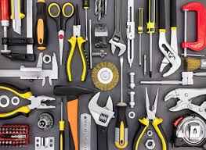
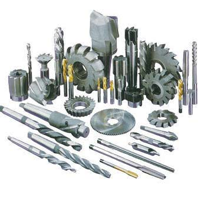
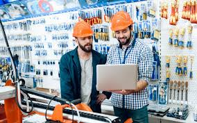
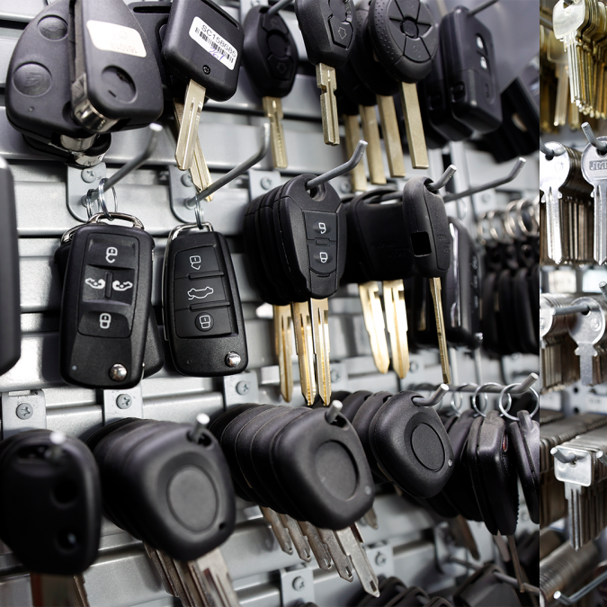

Ferretería General

Las ferreterías tradicionales ofrecen una amplia variedad de productos para construcción, electricidad, fontanería, carpintería y jardinería. Este servicio atiende tanto a profesionales del rubro como a personas que realizan reparaciones en el hogar, facilitando la adquisición de herramientas, tornillos, pinturas, y más.
Corte de Materiales

Muchos establecimientos brindan el servicio de corte de madera, tubos de PVC, planchas metálicas o vidrio según las medidas que el cliente solicite. Este servicio es ideal para proyectos personalizados y evita que el cliente tenga que realizar cortes por su cuenta.
Asesoría Técnica

El personal especializado brinda orientación sobre qué materiales, herramientas o soluciones son las más adecuadas para un proyecto determinado. Esto ayuda a los clientes a evitar errores de compra y lograr un trabajo más eficiente y seguro.
Clonación de Llaves

Uno de los servicios más comunes y prácticos. Las ferreterías suelen contar con máquinas especializadas para hacer copias de llaves de casa, candados o vehículos, ofreciendo rapidez y precisión.